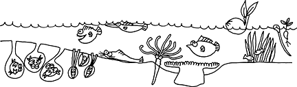
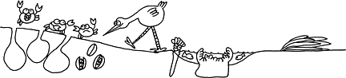

|
|
| index of concepts |
| tides | intertidal zone | zonation | ecosystems |
| What
is an intertidal zone? updated Dec 2019 At the edge of land and sea, there is a zone that is submerged at high tide, but is dry and exposed to air at low tide. This coastal area affected by the tides is called the intertidal zone. More about the tides. This intertidal zone is rich in life because high concentrations of nutrients flow from the land. Sunlight penetrates the shallow waters, allowing organisms that rely on sunlight to grow well on the shore bottom. These include plants, seaweeds and corals. These in turn shelter and feed other life. In areas sheltered from strong waves, an even wider variety of life can settle down. A particularly large variety of plants and animals are found in the intertidal zone because the twice-daily change in water levels supports two 'shifts' of activity in the same area. For example, some animals are active at low tide while aquatic creatures take over at high tide. The tides thus strongly affect the rhythm of life on the intertidal zone. |
 |
| Incoming tides bring in fresh supplies of oxygen, nutrients and plankton
to shallow areas. Seeds of coastal and mangrove plants also float
in to colonise new spots. At high tide, filter-feeders gorge while
fish can forage in the shallows. |
 |
| Outgoing tides flush out waste and deliver nutrients to habitats further
away from the shore. Floating out with the tide are animals, their
eggs and free-swimming larvae, seaweeds, and seeds of seagrass and
mangroves. At low tide, some creatures feed on the dry intertidal
flats or in shallow pools left behind at low tide, safe from aquatic
predators who leave for deeper waters (but they still have to look
out for land predators!). Different kinds animals are also active during the daytime and night-time. The intertidal zone is often busier after the sun sets, when it's cool and dark. The influence of the tides results in zones of different lifeforms on a sea shore. More about zonation. |

| Life by the Moon: The cycle of
spring and neap tides profoundly influences life on the intertidal
zone. For example, eggs and larvae are usually released at spring
tide so that they can be carried far out to sea. More
about the tides and what causes them. The slope of a shore determines the extent of the intertidal zone. A gentle gradient means a larger area is affected by the tides. Such large shallow areas allows a wider variety of ecosystems and thus richer biodiversity. Unfortunately, such shallow areas are among the first to be buried by reclamation. The resulting reclaimed shore is often steeply sloping with a narrow intertidal, or bound by seawalls. But some marvelous natural intertidal areas have escaped development. While some man-made lagoons and seawalls are slowly being recolonised by marine life. Although many shores are easily accessible, most of Singapore's best shores remain an unintended secret. Extreme low spring tides are brief and happen only during a few months in a year, usually well before sunrise. (Thus, the intertidal is not often exposed to full sun at low spring tide. This perhaps is one reason why Singapore's intertidal is so rich.) Nevertheless, enjoyable exploration is possible on some not-so-low tides during daylight, when guided shore walks are held at various locations. More about the tides and visiting our shores. |
Links
References
|